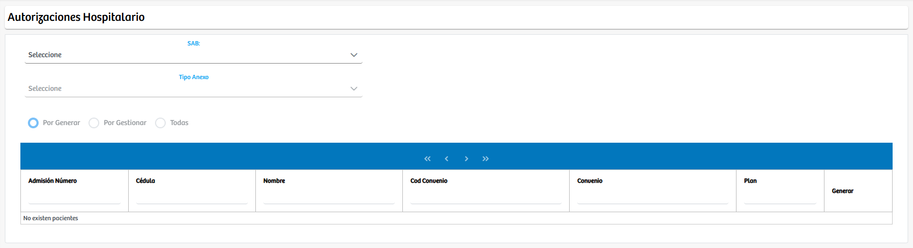
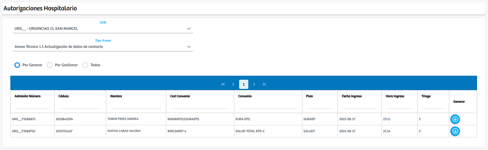
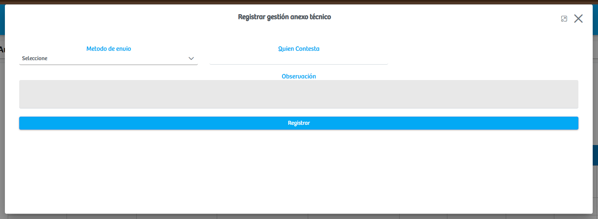
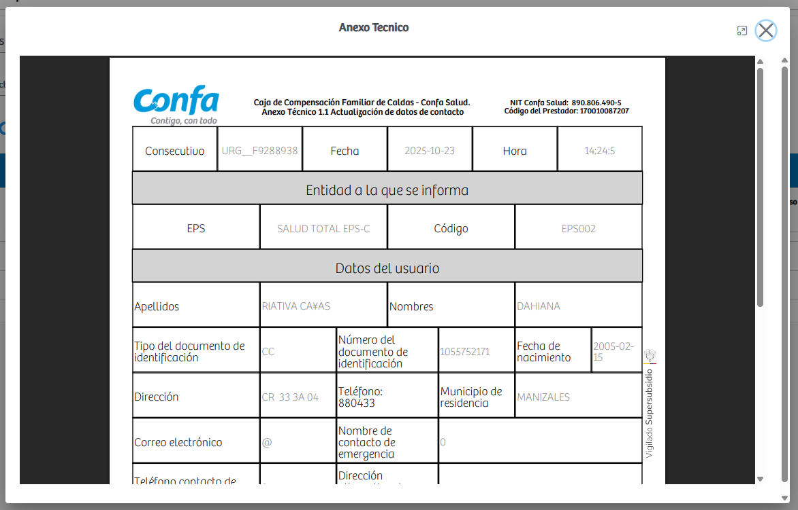

Modulos Sas-Web
Funcionalidades
Hospitalario
El módulo Hospitalario permite gestionar de manera centralizada los anexos técnicos asociados a los servicios hospitalarios. Al ingresar, el sistema presenta dos campos de selección principales: el SAB, que corresponde al punto o unidad de atención desde la cual se origina la solicitud, y el Tipo de Anexo, que define el formato técnico que se generará y tramitará para cada caso. Una vez seleccionados estos parámetros, la plataforma carga automáticamente los registros que cumplen con los criterios indicados y los clasifica en tres grupos operativos: Por generar, Por gestionar y Todas, lo que facilita la visualización del estado actual de cada solicitud.
En la categoría Por generar, se encuentran aquellos registros que aún no cuentan con un anexo técnico creado. Para estos casos, el usuario debe iniciar el proceso seleccionando el ícono correspondiente, tras lo cual el sistema genera de manera automática el documento oficial utilizando la información disponible del paciente, del convenio, del plan y de la admisión. Una vez creado el anexo, este cambia de estado y pasa a la sección Por gestionar, desde donde es posible continuar con el trámite correspondiente.
La fase de gestión se realiza a través de un modal que se despliega al seleccionar el botón de gestión del anexo. En esta interfaz, el usuario debe registrar la información relacionada con la interacción operativa del documento, incluyendo el método de envío, la persona que contesta y cualquier observación adicional necesaria para dejar constancia del proceso. Esta gestión formaliza el seguimiento administrativo del anexo técnico y garantiza que exista trazabilidad sobre cómo fue tramitado cada caso. Adicionalmente, el sistema cuenta con la posibilidad de visualizar el documento generado en formato PDF, lo que permite validar su contenido y calidad antes de proceder con el envío o archivo definitivo.
 Gracias a esta estructura, el módulo organiza y agiliza el flujo de trabajo de las autorizaciones hospitalarias, permitiendo generar, consultar, gestionar y documentar los anexos técnicos de manera ordenada y trazable, asegurando que cada solicitud cumpla con los requisitos administrativos exigidos por los diferentes aseguradores.